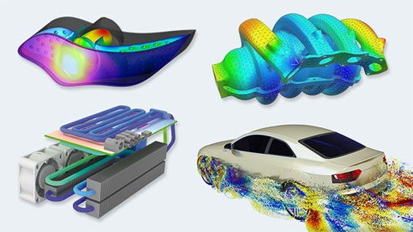

Introduction of Computational Fluid Dynamics#
Computational Fluid Dynamics (CFD), a subarea of fluid mechanics, focuses on the development of numerical methods to analyze and solve the governing equations in fluid dynamics. Visualization of some CFD simulations are shown here:

https://www.plm.automation.siemens.com/global/de/our-story/glossary/cfd-simulation/67873
What is the governing equations in fluid dynamics? It is the Navier–Stokes equations. Here’s a common form of the NS equations for incompressible flow in Markdown format:
Navier-Stokes Equations for Incompressible Flow:
Momentum equation: \( \frac{\partial \mathbf{u}}{\partial t} + \mathbf{u} \cdot \nabla \mathbf{u} = -\frac{1}{\rho} \nabla p + \nu \nabla^2 \mathbf{u} + \mathbf{f} \)
Continuity equation: \( \nabla \cdot \mathbf{u} = 0 \)
Where:
\( \mathbf{u} \) is the velocity field,
\( t \) is time,
\( \rho \) is the fluid density,
\( p \) is the pressure field,
\( \nu \) is the kinematic viscosity,
\( \mathbf{f} \) represents body forces (e.g., gravity),
\( \nabla \) denotes the gradient operator,
\( \nabla^2 \) is the Laplacian operator.
At first glance, these equations may seem daunting, but the primary aim of this course is to demystify them and guide you through numerically solving them using high-performance Python programming techniques. Our goal is to help you become comfortable and proficient with these concepts!
In this course, we focus on the application of computational techniques for solving partial differential equations (PDEs), particularly the Navier-Stokes Equations. These computational approaches effectively transform PDEs into linear algebraic equations. Among the various techniques available, such as the Finite Element Method, Finite Difference Method, and Finite Volume Method, our primary emphasis will be on the Finite Difference Method and its implementation in Python.
Moving forward, we will begin our journey with the simplest form of the convection equation.